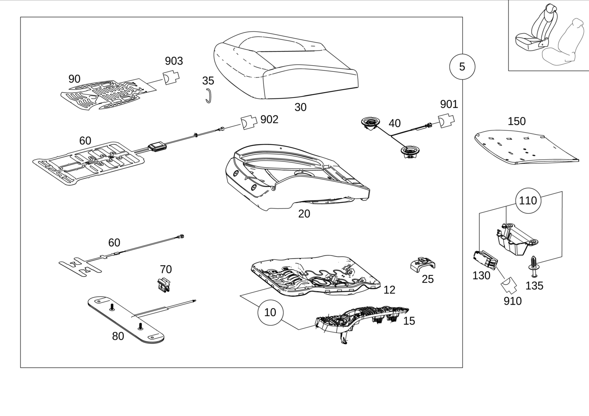

| № | Артикул | Название | Кол. | Примечание |
|---|---|---|---|---|
| 5 | A 166 910 74 16 | Подушка сиденья водителя (FAHRERKISSEN) | 1 | Правое сиденье |
| 5 | A 166 910 80 16 | Подушка сиденья водителя (FAHRERKISSEN) | 1 | Правое сиденье |
| 5 | A 166 910 86 16 | Подушка сиденья водителя | 1 | Правое сиденье |
| 5 | A 166 910 92 16 | Подушка сиденья водителя (FAHRERKISSEN) | 1 | Правое сиденье |
| 5 | A 166 910 60 10 | Подушка сиденья водителя (FAHRERKISSEN) | 1 | Правое сиденье |
| 5 | A 166 910 72 10 | Подушка сиденья водителя (FAHRERKISSEN) | 1 | Правое сиденье |
| 5 | A 292 910 22 05 | Подушка сиденья водителя | 1 | Правое сиденье |
| 5 | A 292 910 54 04 | Подушка сиденья водителя | 1 | Правое сиденье |
| 5 | A 292 910 24 05 | Подушка сиденья водителя | 1 | Правое сиденье |
| 5 | A 292 910 26 05 | Подушка сиденья водителя | 1 | Правое сиденье |
| 5 | A 292 910 50 04 | Подушка сиденья водителя | 1 | Правое сиденье |
| 5 | A 166 910 14 14 | Подушка сиденья водителя (FAHRERKISSEN) | 1 | Правое сиденье |
| 5 | A 166 910 00 14 | Подушка сиденья водителя | 1 | Правое сиденье |
| 5 | A 292 910 00 04 | Подушка сиденья водителя | 1 | Правое сиденье |
| 5 | A 166 910 16 14 | Подушка сиденья водителя | 1 | Правое сиденье |
| 5 | A 292 910 44 04 | Подушка сиденья водителя | 1 | Правое сиденье |
| 5 | A 166 910 18 14 | Подушка сиденья водителя (FAHRERKISSEN) | 1 | Правое сиденье |
| 5 | A 166 910 20 14 | Подушка сиденья водителя (FAHRERKISSEN) | 1 | Правое сиденье |
| 5 | A 166 910 22 14 | Подушка сиденья водителя (FAHRERKISSEN) | 1 | Правое сиденье |
| 5 | A 166 910 62 30 | Подушка сиденья водителя (FAHRERKISSEN) | 1 | Правое сиденье |
| 5 | A 166 910 64 30 | Подушка сиденья водителя (FAHRERKISSEN) | 1 | Правое сиденье |
| 5 | A 166 910 80 05 | Подушка сиденья водителя | 1 | Правое сиденье |
| 5 | A 166 910 84 05 | Подушка сиденья водителя | 1 | Правое сиденье |
| 5 | A 166 910 68 30 | Подушка сиденья водителя | 1 | Правое сиденье |
| 5 | A 166 910 66 30 | Подушка сиденья водителя | 1 | Правое сиденье |
| 5 | A 166 910 06 17 | Подушка сиденья водителя (FAHRERKISSEN) | 1 | Правое сиденье |
| 5 | A 292 910 46 04 | Подушка сиденья водителя | 1 | Правое сиденье |
| 5 | A 292 910 32 04 | Подушка сиденья водителя | 1 | Правое сиденье |
| 5 | A 292 910 34 04 | Подушка сиденья водителя | 1 | Правое сиденье |
| 5 | A 292 910 36 04 | Подушка сиденья водителя | 1 | Правое сиденье |
| 5 | A 292 910 38 04 | Подушка сиденья водителя | 1 | Правое сиденье |
| 5 | A 292 910 32 05 | Подушка сиденья водителя | 1 | Правое сиденье |
| 5 | A 292 910 38 05 | Подушка сиденья водителя | 1 | Правое сиденье |
| 5 | A 292 910 86 05 | Подушка сиденья водителя | 1 | Правое сиденье |
| 5 | A 292 910 90 05 | Подушка сиденья водителя | 1 | Правое сиденье |
| 5 | A 292 910 32 05 | Подушка сиденья водителя | 1 | Правое сиденье |
| 5 | A 292 910 38 05 | Подушка сиденья водителя | 1 | Правое сиденье |
| 5 | A 166 910 68 17 | Подушка сиденья водителя (FAHRERKISSEN) | 1 | Правое сиденье |
| 5 | A 166 910 70 17 | Подушка сиденья водителя (FAHRERKISSEN) | 1 | Правое сиденье |
| 5 | A 166 910 66 10 | Подушка сиденья водителя (FAHRERKISSEN) | 1 | Правое сиденье |
| 5 | A 166 910 78 10 | Подушка сиденья водителя (FAHRERKISSEN) | 1 | Правое сиденье |
| 5 | A 292 910 52 04 | Подушка сиденья водителя | 1 | Правое сиденье |
| 5 | A 292 910 99 05 | Подушка сиденья водителя | 1 | Правое сиденье |
| 5 | A 292 910 48 04 | Подушка сиденья водителя | 1 | Правое сиденье |
| 5 | A 292 910 07 07 | Подушка сиденья водителя | 1 | Правое сиденье |
| 5 | A 292 910 30 04 | Подушка сиденья водителя | 1 | Правое сиденье |
| 5 | A 292 910 15 07 | Подушка сиденья водителя | 1 | Правое сиденье |
| 10 | A 166 910 06 24 | Каркас сиденья (SITZKASTEN) | 1 | ПРАВОЕ СИДЕНЬЕ |
| 12 | A 166 910 01 22 | - Рама подушки (KISSENRAHMEN) | 1 | ПРАВОЕ СИДЕНЬЕ |
| 15 | A 166 918 08 00 | - Крышка (ABDECKUNG) | 1 | ПОДУШКА СИДЕН. СПРАВА |
| 20 | A 166 910 20 03 | Подкладка подушки сиденья (AUFLAGE FAHRERKISSEN) | 1 | Правое сиденье |
| 20 | A 166 910 72 02 | Подкладка подушки сиденья (AUFLAGE FAHRERKISSEN) | 1 | Правое сиденье |
| 20 | A 166 910 32 03 | Подкладка подушки сиденья (AUFLAGE FAHRERKISSEN) | 1 | Правое сиденье |
| 20 | A 166 910 74 02 | Подкладка подушки сиденья (AUFLAGE FAHRERKISSEN) | 1 | Правое сиденье |
| 20 | A 166 910 34 01 | Подкладка подушки сиденья (AUFLAGE FAHRERKISSEN) | 1 | Правое сиденье |
| 20 | A 166 910 34 01 | Подкладка подушки сиденья (AUFLAGE FAHRERKISSEN) | 1 | Правое сиденье |
| 20 | A 166 910 23 03 | Подкладка подушки сиденья (AUFLAGE FAHRERKISSEN) | 1 | Правое сиденье |
| 20 | A 166 910 23 03 | Подкладка подушки сиденья (AUFLAGE FAHRERKISSEN) | 1 | Правое сиденье |
| 20 | A 292 910 04 03 | Подкладка подушки сиденья (AUFLAGE FAHRERKISSEN) | 1 | Правое сиденье |
| 20 | A 292 910 04 03 | Подкладка подушки сиденья (AUFLAGE FAHRERKISSEN) | 1 | Правое сиденье |
| 20 | A 292 910 08 03 | Подкладка подушки сиденья (AUFLAGE FAHRERKISSEN) | 1 | Правое сиденье |
| 20 | A 292 910 08 03 | Подкладка подушки сиденья (AUFLAGE FAHRERKISSEN) | 1 | Правое сиденье |
| 20 | A 292 910 12 03 | Подкладка подушки сиденья (AUFLAGE FAHRERKISSEN) | 1 | Правое сиденье |
| 20 | A 292 910 12 03 | Подкладка подушки сиденья (AUFLAGE FAHRERKISSEN) | 1 | Правое сиденье |
| 20 | A 292 910 14 03 | Подкладка подушки сиденья (AUFLAGE FAHRERKISSEN) | 1 | Правое сиденье |
| 20 | A 292 910 14 03 | Подкладка подушки сиденья (AUFLAGE FAHRERKISSEN) | 1 | Правое сиденье |
| 20 | A 166 910 12 08 | Подкладка подушки сиденья (AUFLAGE FAHRERKISSEN) | 1 | Правое сиденье |
| 20 | A 292 910 04 03 | Подкладка подушки сиденья (AUFLAGE FAHRERKISSEN) | 1 | Правое сиденье |
| 20 | A 166 910 12 08 | Подкладка подушки сиденья (AUFLAGE FAHRERKISSEN) | 1 | Правое сиденье |
| 25 | A 166 911 01 00 | Опорная пластина (LAGERPLATTE) | 2 | Правое сиденье |
| 30 | A 166 910 08 16 | Обивка подушки сиденья (BEZUG FAHRERKISSEN) | 1 | Правое сиденье |
| 30 | A 166 910 30 08 | Обивка подушки сиденья (BEZUG FAHRERKISSEN) | 1 | Правое сиденье |
| 30 | A 166 910 30 08 | Обивка подушки сиденья (BEZUG FAHRERKISSEN) | 1 | Правое сиденье |
| 30 | A 166 910 32 08 | Обивка подушки сиденья (BEZUG FAHRERKISSEN) | 1 | Правое сиденье |
| 30 | A 166 910 32 08 | Обивка подушки сиденья (BEZUG FAHRERKISSEN) | 1 | Правое сиденье |
| 30 | A 166 910 34 08 | Обивка подушки сиденья (BEZUG FAHRERKISSEN) | 1 | Правое сиденье |
| 30 | A 166 910 34 08 | Обивка подушки сиденья (BEZUG FAHRERKISSEN) | 1 | Правое сиденье |
| 30 | A 166 910 36 17 | Обивка подушки сиденья (BEZUG FAHRERKISSEN) | 1 | Правое сиденье |
| 30 | A 166 910 36 17 | Обивка подушки сиденья (BEZUG FAHRERKISSEN) | 1 | Правое сиденье |
| 30 | A 166 910 56 03 | Обивка подушки сиденья | 1 | Правое сиденье |
| 30 | A 166 910 58 03 | Обивка подушки сиденья | 1 | Правое сиденье |
| 30 | A 166 910 57 03 | Обивка подушки сиденья | 1 | Правое сиденье |
| 30 | A 166 910 59 03 | Обивка подушки сиденья | 1 | Правое сиденье |
| 30 | A 166 910 32 17 | Обивка подушки сиденья (BEZUG FAHRERKISSEN) | 1 | Правое сиденье |
| 30 | A 166 910 32 17 | Обивка подушки сиденья (BEZUG FAHRERKISSEN) | 1 | Правое сиденье |
| 30 | A 166 910 34 17 | Обивка подушки сиденья (BEZUG FAHRERKISSEN) | 1 | Правое сиденье |
| 30 | A 166 910 34 17 | Обивка подушки сиденья (BEZUG FAHRERKISSEN) | 1 | Правое сиденье |
| 30 | A 166 910 72 13 | Обивка подушки сиденья (BEZUG FAHRERKISSEN) | 1 | Правое сиденье |
| 30 | A 166 910 72 13 | Обивка подушки сиденья (BEZUG FAHRERKISSEN) | 1 | Правое сиденье |
| 30 | A 166 910 74 13 | Обивка подушки сиденья (BEZUG FAHRERKISSEN) | 1 | Правое сиденье |
| 30 | A 166 910 74 13 | Обивка подушки сиденья (BEZUG FAHRERKISSEN) | 1 | Правое сиденье |
| 30 | A 166 910 76 13 | Обивка подушки сиденья (BEZUG FAHRERKISSEN) | 1 | Правое сиденье |
| 30 | A 166 910 76 13 | Обивка подушки сиденья (BEZUG FAHRERKISSEN) | 1 | Правое сиденье |
| 30 | A 166 910 78 13 | Обивка подушки сиденья (BEZUG FAHRERKISSEN) | 1 | Правое сиденье |
| 30 | A 166 910 78 13 | Обивка подушки сиденья (BEZUG FAHRERKISSEN) | 1 | Правое сиденье |
| 30 | A 166 910 84 03 | Обивка подушки сиденья | 1 | Правое сиденье |
| 30 | A 166 910 84 03 | Обивка подушки сиденья | 1 | Правое сиденье |
| 30 | A 292 910 44 02 | Обивка подушки сиденья | 1 | Правое сиденье |
| 30 | A 292 910 56 04 | Обивка подушки сиденья | 1 | Правое сиденье |
| 30 | A 292 910 44 02 | Обивка подушки сиденья | 1 | Правое сиденье |
| 30 | A 292 910 56 04 | Обивка подушки сиденья | 1 | Правое сиденье |
| 30 | A 292 910 46 02 | Обивка подушки сиденья | 1 | Правое сиденье |
| 30 | A 292 910 60 04 | Обивка подушки сиденья | 1 | Правое сиденье |
| 30 | A 292 910 46 02 | Обивка подушки сиденья | 1 | Правое сиденье |
| 30 | A 292 910 60 04 | Обивка подушки сиденья | 1 | Правое сиденье |
| 30 | A 292 910 48 02 | Обивка подушки сиденья | 1 | Правое сиденье |
| 30 | A 292 910 64 04 | Обивка подушки сиденья | 1 | Правое сиденье |
| 30 | A 292 910 48 02 | Обивка подушки сиденья | 1 | Правое сиденье |
| 30 | A 292 910 64 04 | Обивка подушки сиденья | 1 | Правое сиденье |
| 30 | A 292 910 50 02 | Обивка подушки сиденья | 1 | Правое сиденье |
| 30 | A 292 910 68 04 | Обивка подушки сиденья | 1 | Правое сиденье |
| 30 | A 292 910 50 02 | Обивка подушки сиденья | 1 | Правое сиденье |
| 30 | A 292 910 68 04 | Обивка подушки сиденья | 1 | Правое сиденье |
| 30 | A 292 910 98 04 | Обивка подушки сиденья | 1 | Правое сиденье |
| 30 | A 292 910 98 04 | Обивка подушки сиденья | 1 | Правое сиденье |
| 30 | A 292 910 92 05 | Обивка подушки сиденья | 1 | Правое сиденье |
| 30 | A 292 910 92 05 | Обивка подушки сиденья | 1 | Правое сиденье |
| 30 | A 292 910 98 04 | Обивка подушки сиденья | 1 | Правое сиденье |
| 30 | A 292 910 52 02 | Обивка подушки сиденья | 1 | Правое сиденье |
| 30 | A 292 910 52 02 | Обивка подушки сиденья | 1 | Правое сиденье |
| 30 | A 292 910 56 02 | Обивка подушки сиденья | 1 | Правое сиденье |
| 30 | A 292 910 58 02 | Обивка подушки сиденья | 1 | Правое сиденье |
| 30 | A 292 910 60 02 | Обивка подушки сиденья | 1 | Правое сиденье |
| 30 | A 292 910 62 02 | Обивка подушки сиденья | 1 | Правое сиденье |
| 35 | A 463 984 00 61 | Крепежная скоба (BEFESTIGUNGSKLAMMER) | 15 | ОБИВКА НА ПОДУШКЕ СИДЕН. |
| 40 | A 099 906 01 15 | Вентилятор (LUEFTER) | 1 | СИСТЕМА КОНДИЦИОНИРОВАНИЯ СИДЕНЬЯ (ПРАВ.) |
| 60 | A 166 870 03 10 | Контактный мат (SCHALTMATTE) | 1 | Правое сиденье |
| 60 | A 166 870 00 79 | Контактный мат (SCHALTMATTE) | 1 | Правое сиденье |
| 70 | A 207 545 16 40 | Держатель (HALTER) | 1 | ВЕНТИЛЯТОР |
| 80 | A 000 910 43 03 | Вставка регулируемая (EINLAGE, VERSTELLBAR) | 1 | Правое сиденье |
| 80 | A 000 910 43 03 | Вставка регулируемая (EINLAGE, VERSTELLBAR) | 1 | Правое сиденье |
| 90 | A 166 820 01 98 | Подогрев сидений (SITZHEIZUNG) | 1 | Правое сиденье |
| 90 | A 166 906 37 01 | Подогрев сидений (SITZHEIZUNG) | 1 | Подогрев сидений |
| 90 | A 166 906 78 00 | Подогрев сидений (SITZHEIZUNG) | 1 | Правое сиденье |
| 90 | A 292 906 25 00 | Подогрев сидений (SITZHEIZUNG) | 1 | Правое сиденье |
| 90 | A 166 906 00 95 | Подогрев сидений (SITZHEIZUNG) | 1 | Правое сиденье |
| 90 | A 292 906 24 00 | Подогрев сидений (SITZHEIZUNG) | 1 | Правое сиденье |
| 110 | A 166 906 04 35 | Плафон освещения салона (INNENRAUMLEUCHTE) | 1 | ПОДСВЕТКА ПРОСТРАНСТВА ДЛЯ НОГ ЗАДНИХ ПАССАЖИРОВ СПРАВА |
| 130 | A 002 820 14 01 | - Фонарь (LEUCHTE) | 1 | ПОДСВЕТКА ПРОСТРАНСТВА ДЛЯ НОГ ЗАДНИХ ПАССАЖИРОВ СПРАВА |
| 135 | A 124 990 04 92 | - Распорная заклепка (SPREIZNIET) | 2 | КРЕПЛЕНИЕ СПРАВА; 6.5X18 |
| 150 | A 166 838 00 00 | Вентиляционная решетка (LUEFTUNGSGITTER) | 1 | Правое сиденье |
| 200 | A 166 910 02 34 | Рама спинки (LEHNENRAHMEN) | 1 | Правое сиденье |
| 200 | A 166 910 04 34 | Рама спинки (LEHNENRAHMEN) | 1 | Правое сиденье |
| 200 | A 166 910 04 34 | Рама спинки (LEHNENRAHMEN) | 1 | Правое сиденье |
| 210 | N 000000 002213 | Винт с 6-гр. глвк (SECHSRUNDSCHRAUBE) | 4 | КРЕПЛЕНИЕ РАМЫ К МЕХАНИЗМУ РЕГУЛИРОВКИ ПОЛОЖЕНИЯ СПИНКИ СИДЕНЬЯ |
| 250 | A 099 906 29 00 | Вентилятор (LUEFTER) | 1 | Правое сиденье |
| 260 | A 166 910 38 01 | Накладка спинки сиденья (AUFLAGE FAHRERLEHNE) | 1 | Правое сиденье |
| 260 | A 166 910 43 01 | Накладка спинки сиденья (AUFLAGE FAHRERLEHNE) | 1 | Правое сиденье |
| 260 | A 166 910 45 01 | Накладка спинки сиденья (AUFLAGE FAHRERLEHNE) | 1 | Правое сиденье |
| 260 | A 166 910 25 03 | Накладка спинки сиденья (AUFLAGE FAHRERLEHNE) | 1 | Правое сиденье |
| 260 | A 166 910 40 01 | Накладка спинки сиденья (AUFLAGE FAHRERLEHNE) | 1 | Правое сиденье |
| 260 | A 292 910 88 02 | Накладка спинки сиденья (AUFLAGE FAHRERLEHNE) | 1 | Правое сиденье |
| 260 | A 292 910 62 05 | Накладка спинки сиденья (AUFLAGE FAHRERLEHNE) | 1 | Правое сиденье |
| 260 | A 292 910 90 02 | Накладка спинки сиденья (AUFLAGE FAHRERLEHNE) | 1 | Правое сиденье |
| 260 | A 292 910 92 02 | Накладка спинки сиденья (AUFLAGE FAHRERLEHNE) | 1 | Правое сиденье |
| 260 | A 292 910 94 02 | Накладка спинки сиденья (AUFLAGE FAHRERLEHNE) | 1 | Правое сиденье |
| 260 | A 292 910 96 02 | Накладка спинки сиденья (AUFLAGE FAHRERLEHNE) | 1 | Правое сиденье |
| 265 | A 166 820 03 98 | Подогрев сидений (SITZHEIZUNG) | 1 | Правое сиденье |
| 265 | A 166 906 80 00 | Подогрев сидений (SITZHEIZUNG) | 1 | Правое сиденье |
| 265 | A 292 906 26 00 | Подогрев сидений (SITZHEIZUNG) | 1 | Правое сиденье |
| 270 | A 166 910 04 47 | Обивка спинки сиденья | 1 | Правое сиденье |
| 270 | A 166 910 12 05 | Обивка спинки сиденья (BEZUG FAHRERLEHNE) | 1 | Правое сиденье |
| 270 | A 166 910 04 09 | Обивка спинки сиденья | 1 | Правое сиденье |
| 270 | A 166 910 76 03 | Обивка спинки сиденья | 1 | Правое сиденье |
| 270 | A 166 910 54 21 | Обивка спинки сиденья (BEZUG FAHRERLEHNE) | 1 | Правое сиденье |
| 270 | A 166 910 56 21 | Обивка спинки сиденья (BEZUG FAHRERLEHNE) | 1 | Правое сиденье |
| 270 | A 166 910 80 13 | Обивка спинки сиденья (BEZUG FAHRERLEHNE) | 1 | Правое сиденье |
| 270 | A 166 910 82 13 | Обивка спинки сиденья (BEZUG FAHRERLEHNE) | 1 | Правое сиденье |
| 270 | A 166 910 84 13 | Обивка спинки сиденья (BEZUG FAHRERLEHNE) | 1 | Правое сиденье |
| 270 | A 166 910 86 13 | Обивка спинки сиденья (BEZUG FAHRERLEHNE) | 1 | Правое сиденье |
| 270 | A 292 910 68 02 | Обивка спинки сиденья | 1 | Правое сиденье |
| 270 | A 292 910 72 04 | Обивка спинки сиденья | 1 | Правое сиденье |
| 270 | A 292 910 70 02 | Обивка спинки сиденья | 1 | Правое сиденье |
| 270 | A 292 910 76 04 | Обивка спинки сиденья | 1 | Правое сиденье |
| 270 | A 292 910 72 02 | Обивка спинки сиденья | 1 | Правое сиденье |
| 270 | A 292 910 80 04 | Обивка спинки сиденья | 1 | Правое сиденье |
| 270 | A 292 910 74 02 | Обивка спинки сиденья | 1 | Правое сиденье |
| 270 | A 292 910 84 04 | Обивка спинки сиденья | 1 | Правое сиденье |
| 270 | A 166 910 12 47 | Обивка спинки сиденья | 1 | Правое сиденье |
| 270 | A 292 910 78 02 | Обивка спинки сиденья | 1 | Правое сиденье |
| 270 | A 166 910 10 47 | Обивка спинки сиденья | 1 | Правое сиденье |
| 270 | A 292 910 76 02 | Обивка спинки сиденья | 1 | Правое сиденье |
| 270 | A 166 910 68 03 | Обивка спинки сиденья | 1 | Правое сиденье |
| 270 | A 166 910 78 04 | Обивка спинки сиденья | 1 | Правое сиденье |
| 270 | A 166 910 94 03 | Обивка спинки сиденья | 1 | Правое сиденье |
| 270 | A 166 910 96 03 | Обивка спинки сиденья | 1 | Правое сиденье |
| 270 | A 292 910 80 02 | Обивка спинки сиденья | 1 | Правое сиденье |
| 270 | A 292 910 82 02 | Обивка спинки сиденья | 1 | Правое сиденье |
| 270 | A 292 910 84 02 | Обивка спинки сиденья | 1 | Правое сиденье |
| 270 | A 292 910 86 02 | Обивка спинки сиденья | 1 | Правое сиденье |
| 275 | A 221 810 02 69 | - Табличка | 1 | Правое сиденье |
| 275 | A 221 810 02 69 | - Табличка | 1 | Правое сиденье |
| 280 | A 221 912 00 14 | - Держатель (HALTER) | 1 | Правое сиденье |
| 280 | A 221 912 00 14 | - Держатель (HALTER) | 1 | Правое сиденье |
| 285 | N 912010 006000 | - Стопорная шайба (SICHERUNGSSCHEIBE) | 2 | ПРАВОЕ СИДЕНЬЕ; 6 MM |
| 285 | N 912010 006000 | - Стопорная шайба (SICHERUNGSSCHEIBE) | 2 | ПРАВОЕ СИДЕНЬЕ; 6 MM |
| 300 | A 166 800 10 00 | Клапанный блок (VENTILBLOCK) | 1 | Правое сиденье |
| 300 | A 166 800 11 00 | Клапанный блок (VENTILBLOCK) | 1 | Правое сиденье |
| 305 | A 166 900 60 13 | - Блок управления (STEUERGERAET) | 1 | Правое сиденье |
| 305 | A 166 900 30 11 | - Блок управления (STEUERGERAET) | 1 | Правое сиденье |
| 308 | A 166 914 00 00 | Пружин.элемент сиденья (FEDER.ELEMENT) | 1 | Правое сиденье |
| 308 | A 166 914 00 00 | Пружин.элемент сиденья (FEDER.ELEMENT) | 1 | Правое сиденье |
| 310 | A 000 910 00 68 | Опорная плита (STUETZPLATTE) | 1 | ПРАВ. СИДЕНЬЕ, СЛЕВА |
| 310 | A 000 910 01 68 | Опорная плита (STUETZPLATTE) | 1 | ПРАВ. СИДЕНЬЕ, СПРАВА |
| 315 | A 003 990 36 97 | Вытяжная заклепка (BLINDNIET) | 3 | ОПОРНАЯ ПЛАСТИНА К РАМЕ СПИНКИ (ЛЕВАЯ) |
| 315 | A 003 990 36 97 | Вытяжная заклепка (BLINDNIET) | 3 | ОПОРНАЯ ПЛАСТИНА К РАМЕ СПИНКИ (ПРАВАЯ) |
| 320 | A 166 800 21 15 | Шланговый трубопровод (SCHLAUCHLEITUNG) | 1 | МУЛЬТИКОНТУР. СИД., СПРАВА |
| 320 | A 166 800 07 00 | Шланговый трубопровод (SCHLAUCHLEITUNG) | 1 | МУЛЬТИКОНТУР. СИД., СПРАВА |
| 325 | N 910002 004104 | Заклепка (NIET) | 6 | КРЕПЛЕНИЕ КЛАПАН. БЛОКА |
| 330 | A 166 910 00 03 | Облицовка | 1 | Правое сиденье |
| 330 | A 166 910 01 03 | Облицовка (VERKLEIDUNG) | 1 | Правое сиденье |
| 335 | A 001 984 09 29 | болт (SCHRAUBE) | 2 | КРЕПЛЕНИЕ КРЫШКИ, СПРАВА; 4.2X23 |
| 350 | A 166 919 02 23 | Ползун (GLEITER) | 1 | Правое сиденье |
| 355 | A 094 990 86 02 | Шуруп (BLECHSCHRAUBE) | 2 | ПРАВОЕ СИДЕНЬЕ; 4.2X9.5 |
| 360 | A 001 984 56 29 | Болт с головкой торкс (SECHSRUNDSCHRAUBE) | 1 | ПРАВОЕ СИДЕНЬЕ; 4X12 |
| 370 | A 166 800 08 00 | Клапанный блок (VENTILBLOCK) | 1 | Правое сиденье |
| 370 | A 166 800 13 00 | Клапанный блок (VENTILBLOCK) | 1 | Правое сиденье |
| 390 | A 166 977 00 01 | Подвеска (FEDERUNG) | 2 | Правое сиденье |
| 395 | A 166 913 07 00 | Опорная плита (STUETZPLATTE) | 1 | Правое сиденье |
| 395 | A 166 913 07 00 | Опорная плита (STUETZPLATTE) | 1 | Правое сиденье |
| 395 | A 166 913 07 00 | Опорная плита (STUETZPLATTE) | 1 | Правое сиденье |
| 400 | A 000 910 77 08 | Поясничный подпор (LORDOSENSTUETZE) | 1 | Правое сиденье |
| 400 | A 000 910 77 08 | Поясничный подпор (LORDOSENSTUETZE) | 1 | Правое сиденье |
| 400 | A 000 910 77 08 | Поясничный подпор (LORDOSENSTUETZE) | 1 | Правое сиденье |
| 410 | A 166 860 04 02 | Боковая НПБ (SEITENAIRBAG) | 1 | Правое сиденье |
| 415 | N 000000 003477 | Гайка (MUTTER) | 2 | КРЕПЛЕНИЕ ТАЗОБЕДРЕННОЙ ПОДУШКИ БЕЗОПАСНОСТИ, СПРАВА; M6 |
| 430 | A 000 970 42 26 | Регулировка выс. подгол. (HOEHENEINSTELLUNG KOPFST.) | 1 | Правое сиденье |
| 430 | A 000 970 42 26 | Регулировка выс. подгол. (HOEHENEINSTELLUNG KOPFST.) | 1 | Правое сиденье |
| 450 | A 166 970 08 41 | Направляющая подголовника | 1 | ПРАВ. СИДЕНЬЕ, СЛЕВА |
| 450 | A 166 970 14 41 | Направляющая подголовника | 1 | ПРАВ. СИДЕНЬЕ, СЛЕВА |
| 450 | A 166 970 14 41 | Направляющая подголовника | 1 | ПРАВ. СИДЕНЬЕ, СЛЕВА |
| 450 | A 166 970 09 41 | Направляющая подголовника (KOPFSTUETZENFUEHRUNG) | 1 | ПРАВ. СИДЕНЬЕ, СПРАВА |
| 470 | A 166 970 27 78 | Подголовник (KOPFSTUETZE) | 1 | Подголовник в задней части салона |
| 470 | A 166 970 48 50 | Подголовник (KOPFSTUETZE) | 1 | Подголовник в задней части салона |
| 470 | A 166 970 36 50 | Подголовник (KOPFSTUETZE) | 1 | Подголовник в задней части салона |
| 470 | A 166 970 53 50 | Подголовник (KOPFSTUETZE) | 1 | Подголовник в задней части салона |
| 470 | A 166 970 29 78 | Подголовник (KOPFSTUETZE) | 1 | Подголовник в задней части салона |
| 470 | A 166 970 49 50 | Подголовник (KOPFSTUETZE) | 1 | Подголовник в задней части салона |
| 470 | A 166 970 37 50 | Подголовник (KOPFSTUETZE) | 1 | Подголовник в задней части салона |
| 470 | A 166 970 54 50 | Подголовник (KOPFSTUETZE) | 1 | Подголовник в задней части салона |
| 470 | A 166 970 29 78 | Подголовник (KOPFSTUETZE) | 1 | Подголовник в задней части салона |
| 470 | A 166 970 49 50 | Подголовник (KOPFSTUETZE) | 1 | Подголовник в задней части салона |
| 470 | A 166 970 27 78 | Подголовник (KOPFSTUETZE) | 1 | Подголовник в задней части салона |
| 470 | A 166 970 48 50 | Подголовник (KOPFSTUETZE) | 1 | Подголовник в задней части салона |
| 470 | A 166 970 31 78 | Подголовник (KOPFSTUETZE) | 1 | Подголовник в задней части салона |
| 470 | A 166 970 51 50 | Подголовник (KOPFSTUETZE) | 1 | Подголовник в задней части салона |
| 470 | A 166 970 38 50 | Подголовник (KOPFSTUETZE) | 1 | Подголовник в задней части салона |
| 470 | A 166 970 55 50 | Подголовник (KOPFSTUETZE) | 1 | Подголовник в задней части салона |
| 470 | A 292 970 00 78 | Подголовник | 1 | Подголовник в задней части салона |
| 470 | A 292 970 02 50 | Подголовник | 1 | Подголовник в задней части салона |
| 470 | A 166 970 21 00 | Подголовник | 1 | Подголовник в задней части салона |
| 470 | A 166 970 22 00 | Подголовник (KOPFSTUETZE) | 1 | Подголовник в задней части салона |
| 470 | A 292 970 02 78 | Подголовник | 1 | Подголовник в задней части салона |
| 470 | A 292 970 06 50 | Подголовник | 1 | Подголовник в задней части салона |
| 470 | A 166 970 19 01 | Подголовник | 1 | Подголовник в задней части салона |
| 470 | A 292 970 07 50 | Подголовник | 1 | Подголовник в задней части салона |
| 470 | A 292 970 08 50 | Подголовник | 1 | Подголовник в задней части салона |
| 470 | A 292 970 02 78 | Подголовник | 1 | Подголовник в задней части салона |
| 470 | A 292 970 06 50 | Подголовник | 1 | Подголовник в задней части салона |
| 470 | A 166 970 19 01 | Подголовник | 1 | Подголовник в задней части салона |
| 470 | A 292 970 00 78 | Подголовник | 1 | Подголовник в задней части салона |
| 470 | A 292 970 02 50 | Подголовник | 1 | Подголовник в задней части салона |
| 470 | A 292 970 04 78 | Подголовник | 1 | Подголовник в задней части салона |
| 470 | A 292 970 04 78 | Подголовник | 1 | Подголовник в задней части салона |
| 470 | A 292 970 14 50 | Подголовник | 1 | Подголовник в задней части салона |
| 470 | A 292 970 14 50 | Подголовник | 1 | Подголовник в задней части салона |
| 470 | A 292 970 15 50 | Подголовник | 1 | Подголовник в задней части салона |
| 470 | A 292 970 15 50 | Подголовник | 1 | Подголовник в задней части салона |
| 470 | A 292 970 09 50 | Подголовник | 1 | Подголовник в задней части салона |
| 470 | A 292 970 09 50 | Подголовник | 1 | Подголовник в задней части салона |
| 470 | A 292 970 00 78 | Подголовник | 1 | Подголовник в задней части салона |
| 470 | A 292 970 02 50 | Подголовник | 1 | Подголовник в задней части салона |
| 470 | A 292 970 02 78 | Подголовник | 1 | Подголовник в задней части салона |
| 470 | A 166 970 19 01 | Подголовник | 1 | Подголовник в задней части салона |
| 470 | A 292 970 07 50 | Подголовник | 1 | Подголовник в задней части салона |
| 470 | A 292 970 08 50 | Подголовник | 1 | Подголовник в задней части салона |
| 470 | A 292 970 04 78 | Подголовник | 1 | Подголовник в задней части салона |
| 470 | A 292 970 14 50 | Подголовник | 1 | Подголовник в задней части салона |
| 470 | A 292 970 15 50 | Подголовник | 1 | Подголовник в задней части салона |
| 470 | A 292 970 09 50 | Подголовник | 1 | Подголовник в задней части салона |
| 480 | A 166 838 01 00 | Вентиляционная решетка (LUEFTUNGSGITTER) | 1 | Правое сиденье |
| 900 | A 004 540 04 05 | Электрический жгут (ELEKTRISCHER LEITUNGSSATZ) | 1 | ПИРОПАТОРОН R12/9, R12/10, R12/11, R12/12 |
| 901 | A 025 545 01 26 | Сцепление, механическое (KUPPLUNG, MECHANISCH) | 1 | ВЕНТИЛЯЦИЯ СИДЕНЬЯ, ПРАВОЕ СИДЕНЬЕ M18/11; 2-PIN MQS |
| 902 | A 028 545 30 26 | Картер сцепления (KUPPL.GEHAEUSE) | 1 | СИСТЕМА РАСПОЗНАВАНИЯ ЗАНЯТОСТИ СИДЕНИЙ N110; 6-PIN MLK1.2 |
| 903 | A 037 545 15 28 | Корпус штекера (STECKERGEHAEUSE) | 1 | ОБОГРЕВ СИД., СПРАВА R13/3; 2-PIN SLK2.8 |
| 904 | A 002 540 67 81 | Розетка (STECKDOSE) | 1 | БЛОК УПРАВЛЕНИЯ СИДЕНЬЯ С МАССАЖНОЙ ФУНКЦИЕЙ (ЧЁРНЫЙ) N32/29; 6-PIN, COD. A |
| 904 | A 009 540 87 81 | Сцепление, механическое (KUPPLUNG, MECHANISCH) | 1 | БЛОК УПРАВЛЕНИЯ СИДЕНЬЯ С МАССАЖНОЙ ФУНКЦИЕЙ (НАТУРАЛЬНЫЙ ЦВЕТ) N32/29; 6-PIN MQS, MCP2.8 |
| 905 | A 026 545 24 26 | Сцепление, механическое (KUPPLUNG, MECHANISCH) | 1 | НАСОС ПОЯСНИЧНОЙ ПОДДЕРЖКИ M25/4, M25/5; 2-PIN MQS |
| 906 | A 221 545 10 26 | Корпус штекера (STECKERGEHAEUSE) | 1 | МЕХАНИЗМ РЕГУЛИРОВКИ СПИНКИ СИДЕНЬЯ M27/5, M28/5; 4-PIN JPT, MT3 |
| 907 | A 037 545 14 28 | Штекер (STECKER) | 1 | НАГРЕВ. ПОДУШКА СПИНКИ R13/2, R13/4; 2-PIN SLK2.8 |
| 908 | A 025 545 01 26 | Сцепление, механическое (KUPPLUNG, MECHANISCH) | 1 | ВЕНТИЛЯЦ. СПИНКИ M18/10, M18/12; 2-PIN MQS |
| 909 | A 025 545 19 26 | Корпус разъема (BUCHSENGEHAEUSE) | 1 | ЭЛЕКТРОДВИГАТЕЛЬ РЕГУЛИРОВКИ ПОДГОЛОВНИКА СИДЕНЬЯ ВОДИТЕЛЯ M27/4; 4-PIN MQS |
| 910 | A 037 545 25 28 | Штекер (STECKER) | 1 | ПЛАФОН ОСВЕЩЕНИЯ ПРОСТРАНСТВА ДЛЯ НОГ, ЗАДНИЙ ПРАВЫЙ E17/17; 2-PIN MCP2.8 |
| 910 | A 025 545 22 26 | Сцепление, механическое (KUPPLUNG, MECHANISCH) | 1 | БУ ПОЯСНИЧНОЙ ОПОРЫ N32/23, N32/24; 6-PIN MQS |
Позиций: 294 · подписано на схемах: 294 · колесо — плавный зум в курсор, перетаскивание — пан, двойной клик — зум, клик по артикулу — скопировать.